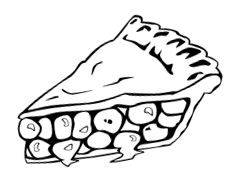

Le lundi de Haid en fête

Dans le souci de n'oublier personne à l'approche de l'automne,
le Comité des fêtes organise un court moment de convivialité au lendemain
de trois jours de fête par la distribution de deux morceaux de tarte à nos ainés.
Aussi nous ferons la tournée des tartes le lundi qui suit le week-end de la fête dans l'après-midi.
A bientôt.